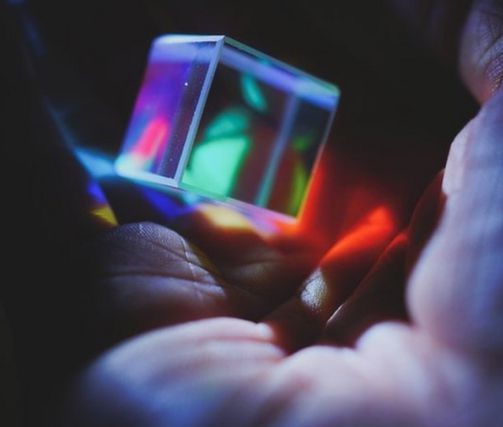
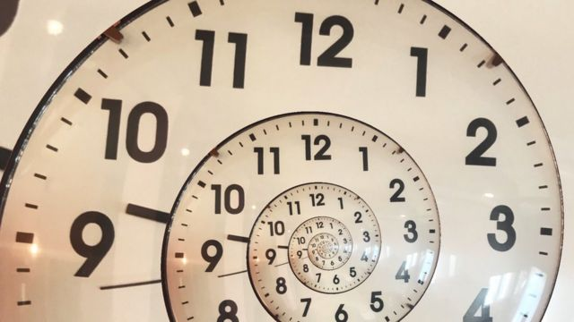

En septiembre del año pasado, dos equipos independientes de la Univesridad de Princeton y la Estación Q de Microsoft en la Universidad de California lograban demostrar, teóricamente y en contra de la opinión mayoritaria, que los "cristales de tiempo" no son simples curiosidades matemáticas, sino que pueden existir en la realidad.Ahora, otros dos equipos de físicos, uno de la Universidad de Harvard y otro del Joint Quantum Institute de la Universidad de Maryland han conseguido, por primera vez y de forma independiente, crear cristales de tiempo en sus laboratorios y confirmar así experimentalmente la existencia de estas extraordinarias estructuras que, según el Nobel de Física Frank Wilczek, que las propuso en 2012, tendrían la capacidad del movimiento perpetuo, violando una de las simetrías fundamentales de las leyes de la Física. Ambos equipos observaron en los cristales de tiempo exactamente el comportamiento predicho en 2016.Los cristales normales, como el diamante, están formados por una red de átomos que se repite en el espacio. Pero varios estudios recientes sugieren que sería posible obtener materiales que se repitan también en el tiempo. El año pasado, por ejemplo, Norman Yao, de la Universidad de Berkeley, sugirió qué es exactamente lo que se debería medir para confirmar su existencia, y adelantaba además que los cristales de tiempo podrían constituir, en realidad, una nueva fase estable de la materia. Lo cual estimuló de inmediato a los dos equipos de Harvard y Maryland para "fabricar" el primer cristal de tiempo, la primera forma de materia no equilibrada observada por el hombre.
Para la mayoría de las personas, los cristales se identifican con diamantes, con gemas semipreciosas o con esas piedras de cuarzo que abundan en las colecciones de minerales. Pero para Norman Yao, esos cristales inertes son solo la punta del iceberg. Si los cristales poseen una estructura atómica que se repite en el espacio, como la red de carbono de un diamante, ¿por qué no pueden tener también una estructura que se repita en el tiempo, es decir, ser cristales de tiempo? En su estudio anterior, Yao describía exactamente cómo medir las propiedades de un cristal así, e incluso predecía cómo deberían ser las diversas fases de un cristal de tiempo, algo similar a las fases líquida y gaseosa del hielo.Ahora, los cálculos de Yao han demostrado ser algo más que meras especulaciones. De hecho, los dos grupos de investigadores que siguieron las instrucciones del físico de Berkeley han conseguido crear por primera vez cristales de tiempo. Ambos equipos, que han usado métodos completamente diferentes, están a la espera de que sus trabajos se publiquen en una revista científica. Sus resultados vieron la luz en dos artículos aparecidos a finales del pasado año en arXiv.org ( aquí y aquí) El propio Yao es coautor de ambas investigaciones.Movimiento perpetuo Según explica Yao, estos cristales se repiten en el tiempo porque son "golpeados" periódicamente, algo así como tocar repetidamente una masa de gelatina para conseguir que se mueva. Pero para el investigador, el gran avance, más incluso que el hecho mismo de que estos cristales se repitan en el tiempo, es que se trata de los primeros de una amplia clase de materiales que están intrínsecamente "fuera de equilibrio", incapaces por completo de ajustarse al equilibrio inmóvil de, por ejemplo, un diamante o un rubí.
| INVESTIGADORES | AREA | UNIVERSIDAD |
|---|---|---|
| Rubén Hurtado Gutiérrez | Electromagnetismo y Física de la Materia | Universidad de Granada |
| Carlos Pérez Espigare | Electromagnetismo y Física de la Materia | Universidad de Granada |
| Pablo Hurtado | Electromagnetismo y Física de la Materia | Universidad de Granada |